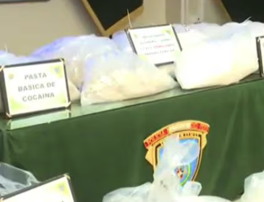

#LasNoticiasdelDia
Congreso blindó en 15 votaciones a 'Los Niños': ¿Quiénes los liberaron de sus procesos?
Hasta el momento, los seis legisladores de Acción Popular sindicados como 'Los Niños', no han sido sancionados. Ello pese a que han enfrentado procesos en la Comisión de Ética y la Subcomisión de Acusaciones Constitucionales. Los casos también han llegado al pleno.Leer mas
Dina Boluarte: todas las contradicciones en su declaración ante la fiscalía por el Caso Rolex
La presidenta dijo: “Nunca supe que los relojes fueran de alta gama”. Sin embargo, una declaración de Humberto Abanto, abogado de Oscorima, deja sin piso ese argumento. El abogado penalista Andy Carrión y el exprocurador Antonio Maldonado coinciden en que Boluarte ha admitido un ilícito al decir que aceptó el préstamo de las joyas.Leer mas
Ayacucho: PNP incauta media tonelada de cocaína
Durante un operativo, las autoridades hallaron una ametralladora, municiones y cuatro toneladas de insumos químicos utilizados para la producción de cocaína.Leer mas
